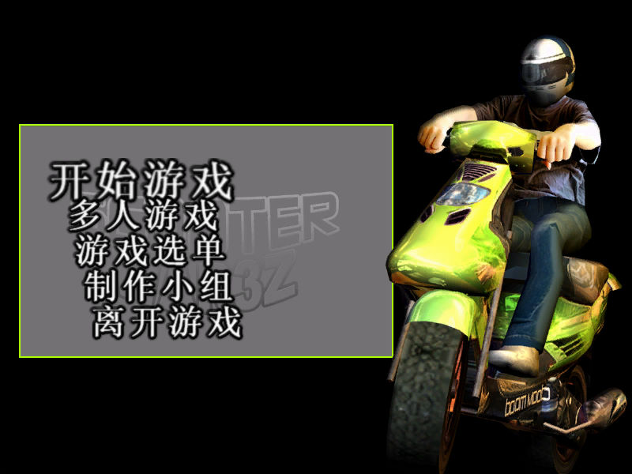
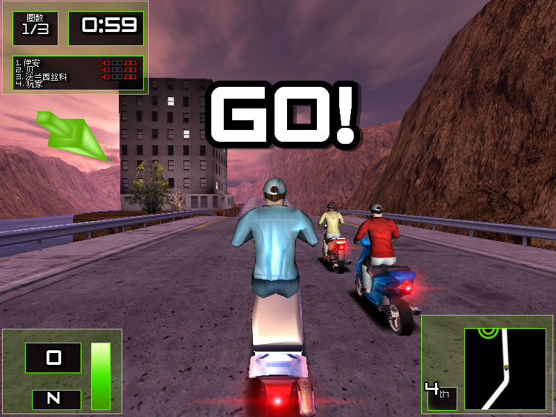

名稱：瘋狂速克達／狂飆鐵騎／踏板車戰爭3z (繁中／簡中版) 簡介：Team6 2006年出品的摩托車競速遊戲，由美思捷達中文化並代理發行 [待補]。

備註：本版缺繁中光碟 保護：無 限制：簡中版必須在簡中系統上執行，或進行下列修改以解除限制： 狂飙铁骑.exe 0F 84 D7 00 00 00 8B 54 24 20 90 90 90 90 90 90 -- -- -- -- 備註：VirtualBox會有貼圖問題，虛擬機建議使用VMware。